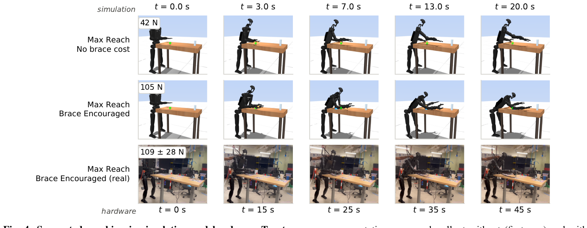
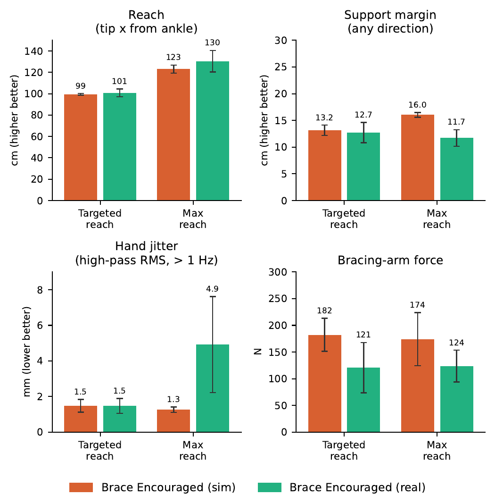
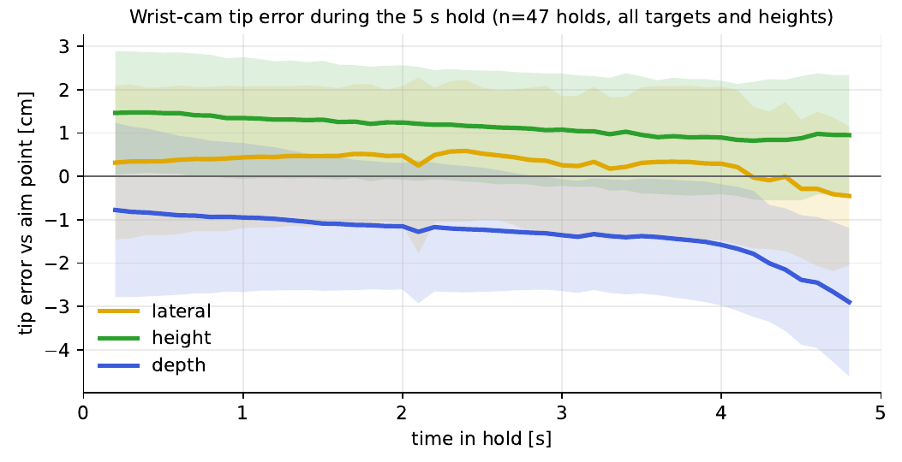

Abstract
Humanoid athleticism requires precise whole-body control under sustained load and contact, not only rapid motion. We study supported reaching: extending workspace by bracing against the environment rather than stepping. We present a sampling-based, contact-implicit MPC framework for whole-body leaning, bracing, reaching, and recovery on a Unitree H1-2 humanoid, with contact timing and forces emerging from MuJoCo rollouts rather than a prescribed schedule. The controller transfers sim-to-real, extends reach by approximately 20 cm beyond the unbraced standing workspace, sustains the loaded posture for over four minutes, and achieves 5.3 ± 0.9 cm mean steady-state error. We further characterize stability, contact loading, and end-effector precision, and analyze failure modes arising from alternative support strategies.
standing workspace
sustained
(±0.9, n=10)
at max reach (11/15)
The contact is discovered, not scripted
A cross-entropy sampling planner rolls out 20 candidate control splines through MuJoCo at ~34 Hz over a 1 s horizon. No contact sequence is ever specified: a soft brace objective biases the optimizer toward seating the forearm on the table, but the realized contact mode, timing, and loading are outcomes of the rolled-out dynamics. Even with the brace objective removed entirely, the planner discovers light upper-body support on its own (19–39 N through the gripper). The objective converts that tendency into a repeatable, flat, heavily loaded forearm contact that survives real-world physics.

Measured, not just demonstrated
Across targeted-reach and max-reach tasks we measure functional reach, support margin, trajectory smoothness (SPARC), high-frequency hand jitter, and bracing-arm contact force, in simulation with and without the brace objective, and on hardware. Simulation and hardware agree closely on the quantities that matter for stability: bracing roughly doubles the support margin at comparable reach (16.1 ± 1.1 cm on hardware), and hardware brace loads (108–109 N) sit near the top of the simulated braced range.

Centimeter-level precision at a one-meter reach
We command the gripper tip to a fixed Cartesian target 0.55 m past the table edge and require a sustained 5 s hold. Across 10 consecutive autonomous trials the mean placement error is 5.3 ± 0.9 cm: unbiased along the reach axis (0.0 ± 1.7 cm), with a repeatable lateral offset of 3.9 cm. The error is a stable, calibratable bias: within each hold the tip is steady to under a centimeter.
